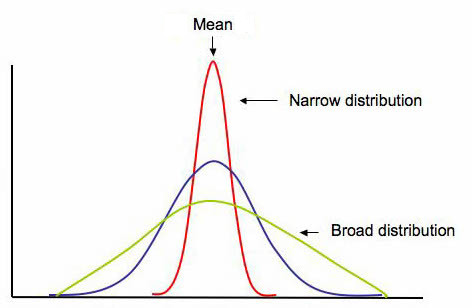

Six Sigma Process Management: Measure Phase

Measure Phase
Measurement is perhaps one of the most important aspects of Six Sigma since the overall idea is to reduce variation and eliminate defects.
First, let's review what a statistic is since there are definitely instances where statistical measures are used in Six Sigma. A statistic is a fact or piece of data from a study of a large quantity of data, often numerical. Often statistics are based on a sample (preferably random) from a population (the entire group). There are two basic types of statistics: qualitative and quantitative.
- Quantitative statistics are information about quantities and is therefore numbers.
- Qualitative statistics are descriptive and relates to phenomenon which can be observed but not measured
Quantitative Statistics Introduction
Throughout statistics we denote:
- N : the number of observations in the population, that is the population size
- n : the number of observations in a sample, that is, the sample size
- xi: the i- th observation
Common types of data
There are four common types of data you will see frequently in measurement:
- Nominal / Qualitative / Categorical (e.g. names, colors, types, varieties, etc.)
- Ordinal (ordered: e.g. rankings, places, order)
- Discrete (Integer values: e.g. number of students in class)
- Quantitative (value has meaning, amounts, usually continuous)
Measures of Central Tendency
Measures of central tendency (center, location) measures the middle point of a distribution or data; these include mean and median.
Mean. The arithmetic average of a group of values. The mean is a measure of the center in the sense that it “balances” the deviations from the mean. It can be thought of as the "center of gravity" of a distribution.
Mean = average [sum(x) / n]
x’s are the data values
n = total number of x’s
Population mean: the mean of all the values in a population.
Sample mean: the mean of sample values collected. If the sample is random and the sample size is large then the same mean is a good estimate of the population mean.
Note that the population mean and sample mean are arithmetic means or average, and computed in the same manner.
Median. The middle value of data when ordered from smallest to largest. The median is a measure of the center in the sense that it “balances” the number of observations on both sides of the median.
(3,6,8,9,12) median = 8
(3,5,6,8,9,12) median = 7 (avg. of middle two numbers)
Mode. The most frequent number.
(3,5,6,6,7,9,12) = 6

Measure of Dispersion
Measure of dispersion (variability, spread): measures the extent to which the observations are scattered; these include standard deviation and range.
Spread. In addition to knowing where the center is for a given distribution, we often want to know how "spread out" the distribution is -- this gives us a measure of the variability of values taken from this distribution. The below graphic shows the general shape of three symmetric unimodal distributions with identical measures of center, but very different amounts of "spread".

(Emory Oxford College Mathematics and Computer Science, n.d.)
Range. Largest observation minus smallest observation (max minus min)
Population variance. The (population) variance is the average of the squared deviations from the population mean.
Sample variance. The (sample) variance is the “average” of the squared deviations from the (sample) mean.
Standard deviation. The standard deviation is a measure of variability in a process. Defined as the root mean square (RMS) deviation from average it indicates how much a process can be expected to vary from the average. The standard deviation is normally fixed for a process that is under statistical control and can only be affected by a process change that affects the variability in a process.
Coefficient of variation. The coefficient of variation (CV) is a statistical measure of the dispersion of data points in a data series around the mean. It shows the extent of variability in relation to the mean of the population.
Outliers. Extreme observations not conforming to the rest of the observation. As a rule of thumb observations that are three standard deviations above or below the mean are considered as outliers.
Parameter
Parameter (in statistics): a numerical descriptive measure computed from the population measurements (census data where everyone is surveyed). Basically it is a value that tells you something about the population. A parameter does not change since everyone (or everything) was surveyed to find the parameter.
Process Performance Metrics
- Defects per unit (DPU)
- Parts per million (PPM)
- Defects per million opportunities (DPMO)
- First pass yield (FPY)
- Rolled throughput yield (RTY)
- Cost of poor quality (COPQ)
DPU = Defects / Units
parts per million (PPM or ppm): PPM = DPU x 1,000,000
The quoted defect rate of a 6σ process is 3.4 parts per million (PPM or ppm), or 3.4 defects per million opportunities
Defects per million opportunities (DPMO)
DPMO = (Defects/Total Opportunities) x 1,000,000 OR DPMO = DPO x 10 6
Benefits
- Defines the current baseline performance
- Provides a common measurement to use as a baseline in assessing the ability of a process to produce defect-free products
- Provides data to help prioritize future quality projects
Yield is defined as the percentage of products that successfully complete the production process
First pass yield (FPY)
First pass yield (FPY) is the percentage of units that successfully complete a process with no rework. This statistic only considers the initial input data and the final output. FPY is typically used to express the process yield for an entire operation. In the case of processes with many steps, it is calculated by multiplying the yield of each step in a process.
Example:
You start with 100 units. There are four sub-processes it they must get through
Process one 95% make it to the next step with no rework so throughput is 95
Process two 95% make it to the next step with no rework so throughput is 90 (result is 90.25 but one cannot have .25 of a unit)
Process three 90% make it to the next step with no rework so throughput is 81
Process four 99% make it to the next step with no rework so throughput is 80 (result is 80.19 but one cannot have .19 of a unit)
Total first pass yield, therefore, is 80 of 100 or 80%
This can also be calculated as 95% x 95% x 90% x 99% = 80.412% so 80%
FPY can also be used to calculate across a number of sub-processes, simply by multiplying the yield of each step
First pass yield is only used for an individual sub-process. Multiplying the set of processes would give you Rolling throughput yield (RTY).
Rolled throughput yield
Rolled throughput yield (RTY or Yrt) is the probability that a single unit can pass through a series of process steps free of defects. RTY is calculated as the overall quality level after several steps in a process have been completed by multiplying the throughput yield of each step within the process.
Calculating Rolled Throughput Yield:
Apply the formula below. Note that rework is just that: rework. There is no distinction made regarding the complexity or number of times a product or service is reworked. RTY signals when a process or sub-process must be improved.
yield = [(N units entering process) – (# of reworks + # in scrap)] / N units entering process
Example:
A unit must go through three processes:
Of 4,000 units started, 200 defective units were scrapped and 600 additional units had one defect each that were successfully reworked.
yield of step 1= (4,000 – (200 scrap + 600 rework))/4,000
= (4,000-800)/4,000
= 3,200/4,000
= 0.80
At step two, we have 3,800 units that came in (since we have both the good units and the reworked ones). 10 are scrapped and 40 are reworked so
yield step 2 = (3,800 - (10 + 40) / 3,800) = .9868
At step three, we have 3,790 units that came in (since we have both the good units and the reworked ones). 24 are scrapped and 19 are reworked
yield step 3 = (3,790 - (24 + 19) / 3,790) = .9886
RTY = .8 x .9868 x .9886 = .78 or 78% yield
The probability of this 3 step process producing a defect free product is 78%
Example 2:
| Step # | # parts in sample lot or batch | # of parts scrapped | # of parts reworked | throughput yield per step |
| 1 | 100 | 6 | 5 | 89.00% |
| 2 | 94 | 3 | 0 | 96.81% |
| 3 | 91 | 2 | 1 | 96.70% |
| 4 | 89 | 3 | 1 | 95.51% |
| Rolled throughput yield: | 79.57% |
Scatter plots/diagrams
A scatterplot is a useful summary of a set of bivariate data (two variables). Scatter plots are similar to line graphs in that they use horizontal and vertical axes to plot data points. However, they have a very specific purpose. Scatter plots show how much one variable is affected by another. A scatterplot is often employed to identify potential associations between two variables, where one may be considered to be an explanatory variable (such as years of education) and another may be considered a response variable (such as annual income). The relationship between two variables is called their correlation. Scatter plots usually consist of a large body of data. The closer the data points come when plotted to making a straight line, the higher the correlation between the two variables, or the stronger the relationship.
If the data points make a straight line going from the origin out to high x- and y-values, then the variables have a positive correlation . If the line goes from a high-value on the y-axis down to a high-value on the x-axis, then the variables have a negative correlation.
A perfect positive correlation is given the value of 1. A perfect negative correlation is given the value of -1. If there is absolutely no correlation present the value given is 0. The closer the number is to 1 or -1, the stronger the correlation, or the stronger the relationship between the variables. The closer the number is to 0, the weaker the correlation. So something that seems to kind of correlate in a positive direction might have a value of 0.69, whereas something with an extremely weak negative correlation might have the value -.20.
How does one calculate the correlation? Well, a super easy way is to use correl() in Excel.
Additonal resources:
Box and whisker
The box and whisker plot is one of the most commonly used methods of displaying numerical data in the world
of statistics. It is a useful chart because of the amount of information that can be quickly summarized into a
simple chart. It shows a five number summary of the class percentages, which would be the minimum, the maximum, the median,
and the IQR or InterQuartile Range which is between the 25th
percentile and 75th percentile. It also shows the distribution of data overall visually.
Credited to Tukey, box-and-whisker plots use five key data points to graphically compare data produced from different sources (different machines, operators, work centers, etc.). The ends of the box are the first and third quartiles, Q1 and Q3. The median forms the centerline (vertical line) within the box. The high and low data points (illustrating the range) serve as end points to lines that extend from the box (the whiskers). Each whisker (including outliers) contains 25% of the data. The box serves as the middle half of the data containing 50% of the distribution.
Consider this example:
You are an instructor of a class. The range of overall student scores in percentage as things stand now looks like this: 74,86,89,95,99,97,95,84,76,54,65,89,97,47,88,67,78,81,94,69. Let's make a box and whisker to assess this data:
The above sample Box and Whisker includes the following information: minimum score, maximum score, lower
quartile, upper quartile, median, interquartile range, and whiskers. The minimum score is 46, maximum is 99,
median is 85, the first quartile is 70.25, the third quartile is 94.75, and the interquartile range is 24.5
according to the plot. According to the plot, the first (lower) 25% quarter of grades were between 47 – 70
percent, the second 25% quarter of grades were between 70 – 85 percent, the third 25% quarter of grades were
85 – 95 percent, and lastly the fourth quarter of grades were between 95 -99 percent.
Measurement System Analysis (MSA)
Measurement system analysis assesses the properties of a good measurement system and also assesses the impact of measurement system variation. Within MSA we assess precision, accuracy/bias, linearity, and stability. We also gauge repeatability and reproducibility (GR&R).
- Precision - the ability to repeatedly measure the same product or service and obtain the same results
- Accuracy (also known as bias) - the ability to produce an average measured value (observed value) which agrees with the true value or standard being used
- Linearity - a measure of the consistency of bias over the range of the measurement device
- Stability - the ability to repeatedly measure the same product or service over time and obtain the same average measure value
- Repeatability - variation obtained by the same person using the same instrument on the same product or service for repeated measurements (variability within the operator and device combination)
- Reproducibility - Variation obtained due to differences in people who are taking the measurements (variability between operators)
References
Emory Oxford College Department of Mathematics and Computer Science (n.d.). Shape, center, and spread of a distribution. Retrieved July 9, 2021 from http://mathcenter.oxford.emory.edu/site/math117/shapeCenterAndSpread/ (Links to an external site.)
Hessing, T. (n.d.) Process Capability (Cp and Cpk). Six Sigma Study Guide. Retrieved March 12, 2021 from https://sixsigmastudyguide.com/process-capability-cp-cpk/ (Links to an external site.)
Oracle Applications. Cp and Cpk. Retrieved March 12, 2021 from https://docs.oracle.com/cd/A60725_05/html/comnls/us/qa/cpcpk.htm (Links to an external
site.)